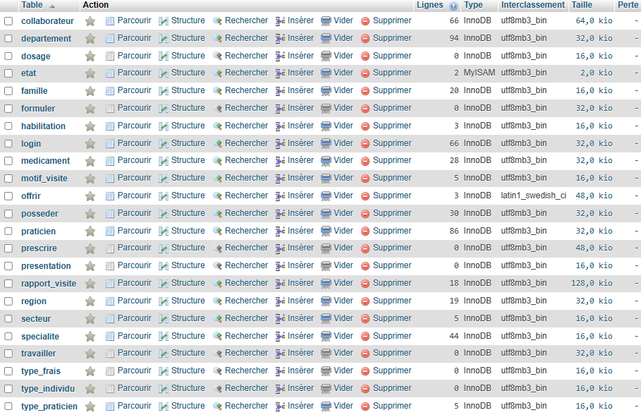
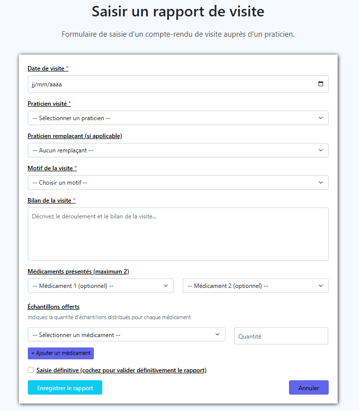
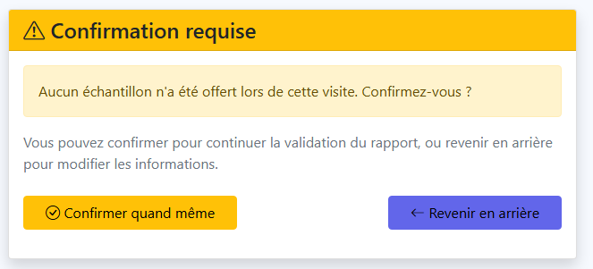
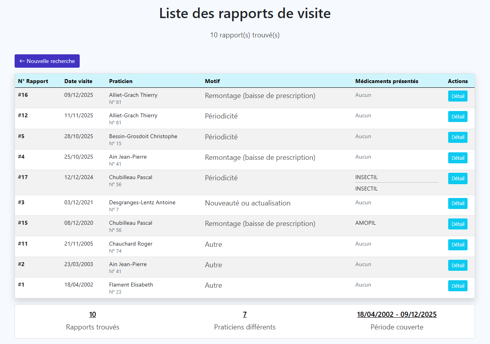
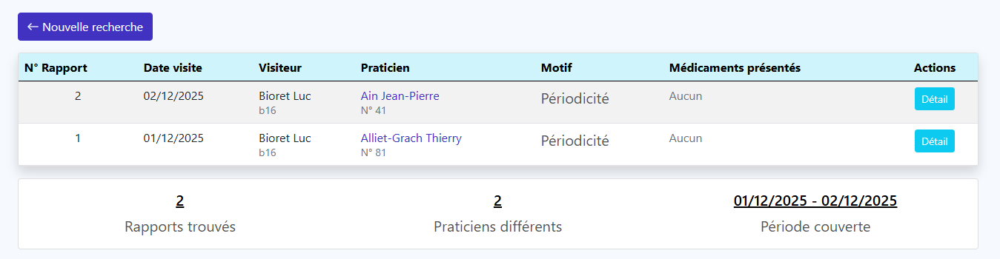
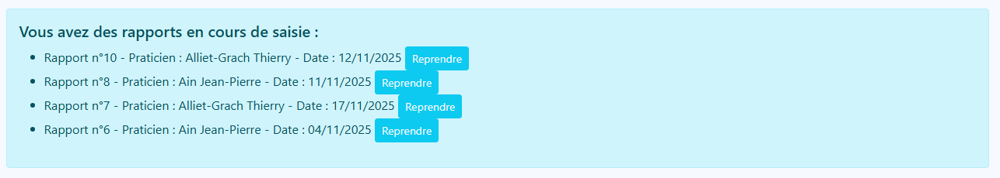
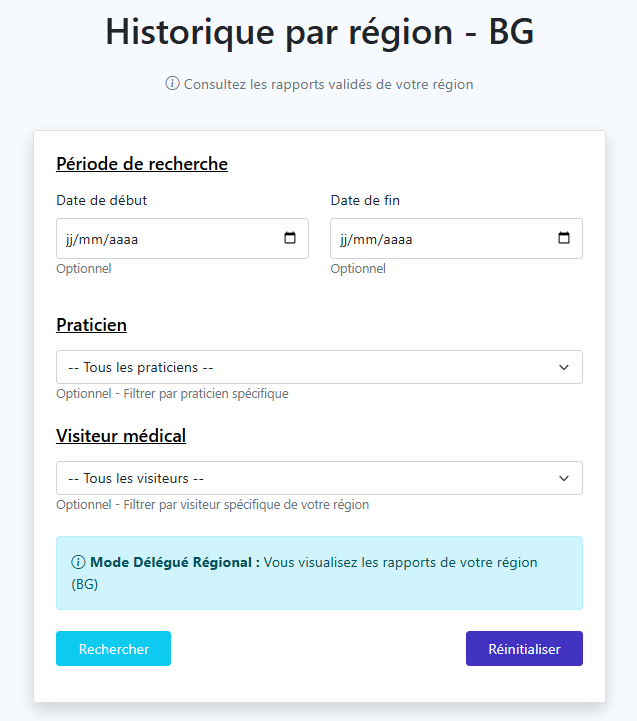
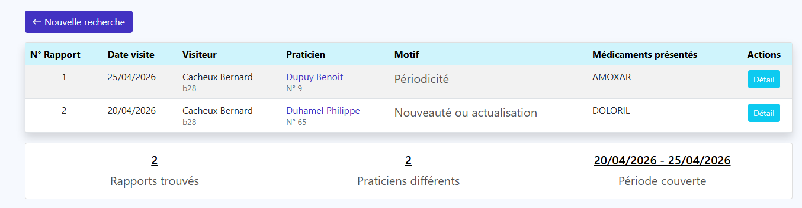

Dans le cadre du projet académique de deuxième année de BTS SIO option SLAM, j’ai participé au développement d’une application web pour le laboratoire pharmaceutique fictif Galaxy Swiss Bourdin (GSB).
L’objectif était de concevoir un module web complet permettant la saisie, la gestion et le suivi des comptes-rendus de visite réalisés par les visiteurs médicaux auprès des praticiens.

Schéma de la base de données

Saisie d'un compte-rendu

Confirmation de saisie

Liste de mes rapports

Détails d'un rapport

Reprise de saisie inachevée

Historique par région

Nouveaux rapports régionaux